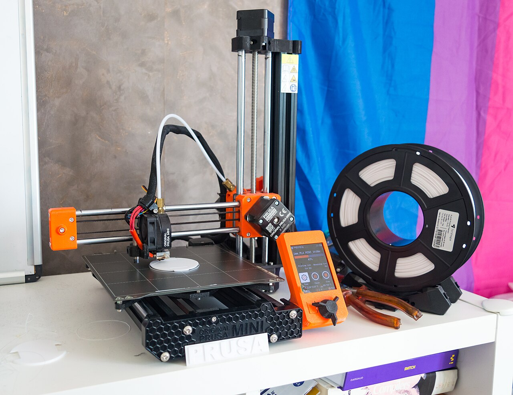
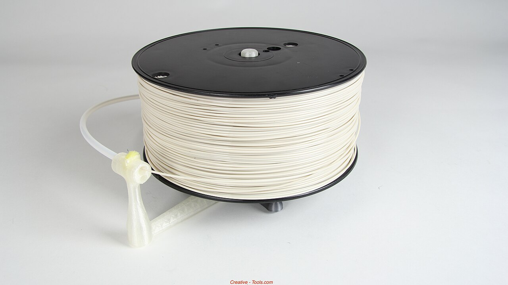

Étape 01
Modéliser
On dessine un modèle 3D avec un logiciel — ou on le télécharge en ligne, déjà prêt.
Guide illustré — Technologie
Un simple fil de plastique devient un objet réel, qu'on tient dans la main. Voici comment, en images.

01 — Définition
Une imprimante normale dépose de l'encre. Une imprimante 3D fabrique de vrais objets en volume : un porte-clés, une figurine, une pièce de rechange…
Elle empile de fines couches de plastique fondu, comme un mille-feuille. On appelle ça la fabrication additive : on ajoute de la matière, couche par couche.
02 — Fonctionnement
Toujours les mêmes trois étapes : dessiner, découper, imprimer.
Étape 01
On dessine un modèle 3D avec un logiciel — ou on le télécharge en ligne, déjà prêt.
Étape 02
Un logiciel « trancheur » découpe le modèle en centaines de fines tranches, comme un saucisson. Chaque tranche = une couche à imprimer.
Étape 03
La buse à 200 °C fait fondre le filament et le dépose. Le plastique durcit aussitôt : l'objet grandit couche après couche.
03 — À toi de jouer
Lance l'impression — ou déplace le curseur — pour voir un vase se construire couche par couche. Envie de choisir l'objet et la couleur ? Va dans l'atelier.
Couche 0 / 48
04 — Matériaux

L'« encre » d'une imprimante 3D est une bobine de fil : le filament. Il existe en plusieurs couleurs et matières — certaines faciles à imprimer, d'autres très résistantes.
Le choix dépend de l'objet : une figurine n'a pas les mêmes besoins qu'une pièce mécanique.
| Matériau | Particularité | Facilité d'utilisation | Exemples d'objets |
|---|---|---|---|
| PLA | Fabriqué à partir d'amidon de maïs, c'est le plus écologique | Très facile | Figurines, objets de décoration |
| PETG | Le même plastique que les bouteilles d'eau, solide et légèrement souple | Facile | Pièces mécaniques, objets d'extérieur |
| ABS | Le plastique des briques LEGO®, très résistant à la chaleur | Difficile | Pièces automobiles, boîtiers |
05 — Applications
Plus seulement dans les laboratoires : on la retrouve presque partout.
Prothèses sur mesure, appareils dentaires, organes d'entraînement pour chirurgiens.
Depuis 2014, les astronautes impriment leurs outils directement en orbite.
D'énormes imprimantes déposent du béton pour bâtir des murs en quelques jours.
Les constructeurs aéronautiques impriment des pièces métalliques plus légères, pour des avions moins gourmands.
Réparer un objet cassé, fabriquer une maquette pour un exposé ou donner vie à ses propres inventions.
« L'impression 3D ne fabrique pas seulement des objets : elle donne forme aux idées. » — Un passionné de fabrication numérique
06 — Vidéo
Cette courte vidéo de la série « 1 jour, 1 question » résume tout, simplement et en s'amusant.
Choisis un objet, une couleur, et imprime-le couche par couche.
Ouvrir l'atelierRéférences